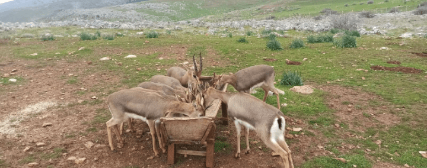
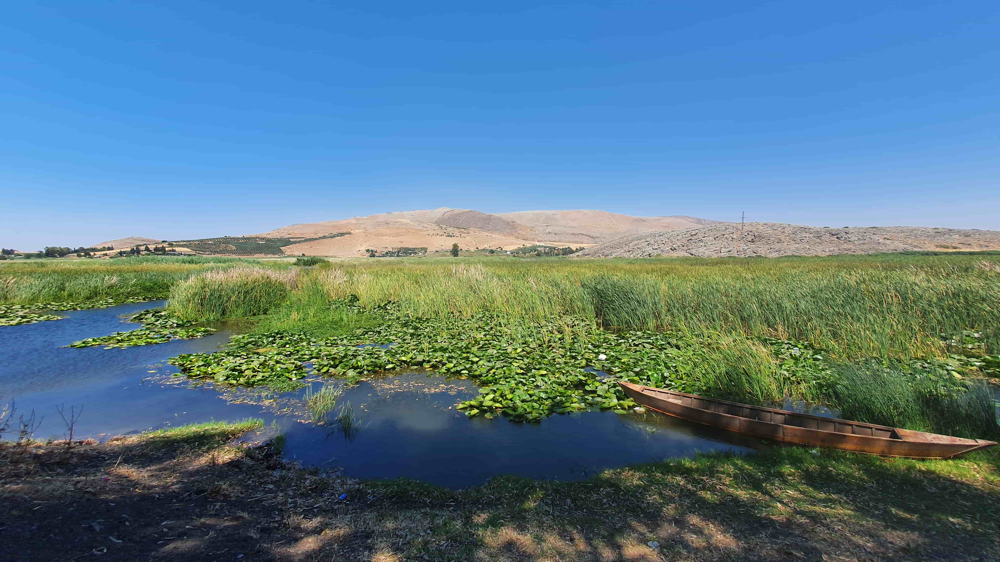

Kırıkhan,
Hatay ilinin ilçelerinden biridir. Nüfusu 119.028 kişidir. Hatay'ın en kalabalık 6. ilçesidir.
Coğrafya
İlçedeki Gölbaşı Gölü'nden bir görünüm (Haziran 2021)
Kırıkhan ilçesinin yüzölçümü 715 km²'dir.[4] Kırıkhan, coğrafi konum ve yüzölçümü bakımından Hatay'ın en büyük ilçesidir. İlçe topraklarının batısında Amanos Dağları, doğusunda Suriye, güneyinde ise Amik Ovası bulunur.
Fauna

Türkiye’de yaşayan iki ceylan türünden biri olan Hatay dağ ceylanı (gazella gazella), ilçenin Suriye sınırı yakınlarında yaşar. Türü tehlikede bir tür olan dağ ceylanının Türkiye'de neslinin devam ettiği 2008 yılında tespit edilmiş; 150 adet olduğu tespit edilen ceylanların sayısı 2020 itibarıyla yaklaşık 900'e çıkmıştır.[5] 2013 yılında 13 hektarlık bir alanda Dağ Ceylanı Üretim İstasyonu kurulmuştur ve Kırkhan'da 13.288 hektarlık alan, 25 Aralık 2019'da tür için “Hatay Dağ Ceylanı Yaban Hayatı Geliştirme Sahası” ilan edilmiştir.
Ekonomi

İskenderun ve Antakya'dan sonra Hatay ilinin en gelişmiş ilçesidir. İlçe geçimini %50'si tarım, %28'i sanayi, geri kalanları ise diğer meslek alanlarıyla sağlamaktadır. Son 15-20 yıl içerisinde Kırıkhan'da tarıma dayalı ekonomide önemli gelişme gözlenmektedir. 29 çırçır ve prese fabrikası, 2 tekstil fabrikası, 6 yağ fabrikası, 2 mısır kurutmayla birlikte sayı 40 civarındadır.
Eğitim
Eğitim kurumları sayısı[6] Anaokulu 7 İlkokul 52 Ortaokul 38 Lise 11
Okullardan 12 tanesinde Bilişim Teknolojileri (BT) sınıfı; 90 tanesinin internet bağlantısı ve 26 okulda da 554 tane etkileşimli tahta bulunmaktadır, ayrıca ilçede bir meslek yüksekokulu da bulunmaktadır.
Kişilerin eğitim düzeyi[7] Bilinmiyor 1.031 Okuryazar değil 2.208 Okuryazar ancak eğitimsiz 17.042 İlkokul 27.122 Ortaokul 12.897 İlköğretim 15.493 Lise 15.493 Lisans 8.377 Yüksek lisans 492 Doktora 37
Nuriye Ulviye Civelek İlçe Halk Kütüphanesi
Kırıkhan'ın ilk kütüphanesi 1965 yılında, halkın katkısıyla belediye parkı içerisinde Fransız yapımı bir bina restore edilerek açıldı ancak beklenen hizmet verilmeyince 1970 yılında ilçe belediyesine devredildi. 1972 yılına dek hizmet veren kütüphane.1972 yılından itibaren o dönem Milli Eğitim Bakanlığına bağlı olan Kütüphaneler ve Yayımlar Genel Müdürlüğüne devredildi. İlçede uzun yıllar hekimlik yapan Dr. Ali Muharrem Civelek, Ermeni Ortodoks Kilisesi gayrimenkulü olan (1931 Fransız yapımı); bugün kullanılan bina eşi Nuriye Ulviye Civelek'in adı olması ve değiştirilmemesi kaydı ile Kütüphane olarak kullanılması için bağışlanmıştır.
10 ayrı sınıflama altında yaklaşık 22 bin Kitabı olan N. Ulviye Civelek Halk Kütüphanesi’nin 3 bin 860 aktif üyesi bulunmakta.[8]
Kültür
Meşhur İslam alimi ve mutasavvıf Bayezid-i Bistami' nin kabri bu ilçede bulunmakta olup, kabri birçok kişi tarafından ziyaret edilmektedir. Kırıkhan ilçesi bütün Türkiye'de yaklaşık iki yüz yıldır diş teknisyenleri ile tanınmaktadır[9].
Tarihçe
Bazı kaynaklarda, "Kırıkhan'ın isminin son yüzyılda duyulmaya başlandığı" ifade edilmekteyse de, bu ismin eskiden beri var olduğu 17. yüzyılda yaşamış olan Karacaoğlan'ın bir şiirinde açıkça görülmektedir. Hatta Kırıkhanlı şair Sefil Molla'nın da kurtuluş yıllarında Kırıkhan'la ilgili şiirleri bulunmaktadır.
Spor
İlçenin takımı Kırıkhanspor 3. Lig'de mücadele etmektedir. Kırıkhanspor tarihinde ilk defa 2010-2011 sezonunda Ziraat Türkiye Kupası'nda gruplara kalarak önemli bir başarıya imza atmıştır.
217351015
Iskenderun Teknik Universitesi